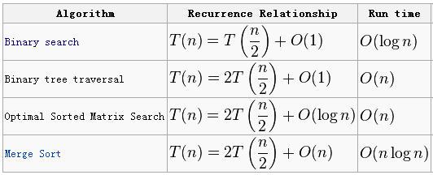
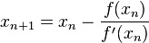

王泉的面试刷题笔记
（下篇）
LeetCode
Quan Wang <quanrpi@gmail.com>
2016.01.06
LeetCode使用方法
Internal
Error: 去掉print的语句
Output Limit Exceeded: 返回的集合的长度大于正确答案
Time Limit Exceeded: 用时过长，需要优化
使用Python时的一个注意事项：
如果有List或者Dictionary作为类里面的attribute，则在函数里一定要清空。
比如有个M={}用于动态规划。则在调用递归函数的最外层函数里，要有个M={}。
不要import，很多东西直接用，例如heapq.heappush等。
使用C++时的一个注意事项：
如果用.size()，一定要强制转换为int类型。
Output Limit Exceeded: 返回的集合的长度大于正确答案
Time Limit Exceeded: 用时过长，需要优化
如果有List或者Dictionary作为类里面的attribute，则在函数里一定要清空。
比如有个M={}用于动态规划。则在调用递归函数的最外层函数里，要有个M={}。
不要import，很多东西直接用，例如heapq.heappush等。
如果用.size()，一定要强制转换为int类型。
常用方法总结：
- hash table （HashMap，HashSet）
- recursion
- dynamic programming
- backtracking回溯法（8 queens, parentheses, permutations, combinations, combination sum）
- bit, XOR, a^b^b=a
- array的修改或合并，从后往前填充元素
- 创建新array，从后往前构建，记录总和、最大值等
- 不能用recursion：用stack
- String太慢，用StringBuffer，方法有append(String s), insert(int offset, String s), toString()
- 排序后用头尾指针(K-Sum, container with most water)
- 连续最大和：running sum（书上的17.8以及18.12）
- substring，用suffix tree
- 找最大的，就从最大的开始试，然后试小的
- 树的常用思路：将节点的取值范围作为参数进行递归（例如判断BT是否是BST）；在节点记录子树的大小；全局变量记录上次访问的节点
- anagram：character count，sort string。回文：中间往两边搜。
回溯法的模板：
有个rec的函数进行recursion，其参数包含：
- 当前是第几步
- 当前结果
- 用来放最终结果的集合
rec函数中关键步骤：
- 如果当前是最后一步，调用addCurrent函数把当前结果加入集合（记得要clone）
- 否则，向前一步尝试新的当前结果
- 递归调用rec，使用新的结果
- 把当前结果再改回来
Main Recurrence Theorem (Master Theorem)
T(n)=aT(n/b)+f(n)
f(n)=O(n^k)
若a<b^k，则T(n)=O(n^k)
若a=b^k，则T(n)=O(n^k log n)
若a>b^k，则T(n)=O(n^c)，c=log_b a

位运算
Single Number，Single Number II以及Single Number III
题目：Given an array of integers, every element appears twice except for one. Find that single one.
方法：(1) HashSet (2) Xor
扩展：appears three times，用3个变量，记录每个bit是出现1次，还是2次，还是3次
for(int i=0;i<A.length;i++)
{
int newone=one|(three&A[i]);
int newtwo=two|(one&A[i]);
int newthree=three|(two&A[i]);
one=newone&(~(one&A[i]));
two=newtwo&(~(two&A[i]));
three=newthree&(~(three&A[i]));
for(int i=0;i<A.length;i++)
{
int newone=one|(three&A[i]);
int newtwo=two|(one&A[i]);
int newthree=three|(two&A[i]);
one=newone&(~(one&A[i]));
two=newtwo&(~(two&A[i]));
three=newthree&(~(three&A[i]));
}
再扩展，除了两个数外，其余数都出现两次。求这两个数。
方法：先将所有数都异或，得到A^B，然后找到A^B为1的一位，A和B这一位不同。将所有数这一位为0的异或起来得到A和B中一个；将所有数这一位为1的异或起来得到另一个。
找为1的那位可以用A&~(A-1)。
Divide Two Integers
题目：Divide two integers without using multiplication, division and mod operator.
简单方法：从0开始每次加divisor看要加几个。很慢。
Trick：从c=1开始对divisor进行位运算，divisor每乘以2，将c也乘以2，直到divisor再乘以2就要大于dividend为止。求差，对差再次进行。
题目：Divide two integers without using multiplication, division and mod operator.
简单方法：从0开始每次加divisor看要加几个。很慢。
Trick：从c=1开始对divisor进行位运算，divisor每乘以2，将c也乘以2，直到divisor再乘以2就要大于dividend为止。求差，对差再次进行。
数学
Unique Paths
题目：m*n的格子从左上到右下多少种走法，只能向下向右走。
题目：m*n的格子从左上到右下多少种走法，只能向下向右走。
用组合数的关键问题是overflow。虽然电脑上用long能成功，但LeetCode上用long还是失败。
算组合数的关键是不能先乘完了再除。要先除后乘，因为有定理：(1+m)(2+m)...(n+m)能被1*2*...*n整除。每一步，要被除的那个数，先和要被乘的那个数求GCD，约分，再和已有乘积求GCD，约分。最后一步再做乘法。
Set Matrix Zeroes
题目：将0元素的整行整列设为0。
constant space solution: 用矩阵的第一行和第一列做标记。
题目：将0元素的整行整列设为0。
constant space solution: 用矩阵的第一行和第一列做标记。
Sqrt(x)
牛顿法：要求f(x)=0的根，则
牛顿法：要求f(x)=0的根，则

要求sqrt(a)，f(x)=x^2-a且要使f(x)=0。
x_(n+1) = x_n ( 1.5 - a/2 * x_n ^ 2 )
Pow(x, n)
x
n
= x
n/2
* x
n/2
* x
n%2
时间复杂度：O(logN)
数组
Best Time to Buy and Sell Stock
问题：一买一卖的最大利润。
方法1：
创建一个数组，从右往左记录出现过的最大值。然后再从左往右找。O(n)时间，O(n)空间。
方法2：
O(n)时间、O(1)空间的算法：记录low和high还有profit。碰到比low更小的就更新low，并清除high。碰到比high更大的就更新high并检查是否更新profit。
Best Time to Buy and Sell Stock II
问题：任意买任意卖的最大利润。
我的解法：记录拐点。
更简单的方法：比较任意相邻两个，如果i比i-1大，则累加price[i]-price[i-1]。
Best Time to Buy and Sell Stock III（技巧题）
问题：交易最多两次。（最多两买两卖）
PreProcessing：从左往右扫，记录最小；从右往左扫，记录最大。
第一步扫描，先计算出子序列[0,...,i]中的最大利润，用一个数组保存下来，那么时间是O(n)。
第二步是逆向扫描，计算子序列[i,...,n-1]上的最大利润，这一步同时就能结合上一步的结果计算最终的最大利润了，这一步也是O(n)。
所以最后算法的复杂度就是O(n)的。
问题：一买一卖的最大利润。
方法1：
创建一个数组，从右往左记录出现过的最大值。然后再从左往右找。O(n)时间，O(n)空间。
方法2：
O(n)时间、O(1)空间的算法：记录low和high还有profit。碰到比low更小的就更新low，并清除high。碰到比high更大的就更新high并检查是否更新profit。
问题：任意买任意卖的最大利润。
我的解法：记录拐点。
更简单的方法：比较任意相邻两个，如果i比i-1大，则累加price[i]-price[i-1]。
问题：交易最多两次。（最多两买两卖）
PreProcessing：从左往右扫，记录最小；从右往左扫，记录最大。
第一步扫描，先计算出子序列[0,...,i]中的最大利润，用一个数组保存下来，那么时间是O(n)。
第二步是逆向扫描，计算子序列[i,...,n-1]上的最大利润，这一步同时就能结合上一步的结果计算最终的最大利润了，这一步也是O(n)。
所以最后算法的复杂度就是O(n)的。
Container With Most Water （经典题！）
问题：n个从(i,0)到(i,a_i)的线段。找两条能装最多的水。
头尾指针法。
O(n)的复杂度。保持两个指针i,j；分别指向长度数组的首尾。如果ai 小于aj，则移动i向后（i++）。反之，移动j向前（j--）。如果当前的area大于所记录的area，替换之。这个想法的基础是，如果i的长度小于j，无论如何移动j，短板在i，不可能找到比当前记录的area更大的值了，只能通过移动i来找到新的可能的更大面积。
证明：向中间移动长板是无法增加面积的：短板限制了高无法增加，而宽又是减少的，所以要增加面积只能移动短板。
问题：n个从(i,0)到(i,a_i)的线段。找两条能装最多的水。
头尾指针法。
O(n)的复杂度。保持两个指针i,j；分别指向长度数组的首尾。如果ai 小于aj，则移动i向后（i++）。反之，移动j向前（j--）。如果当前的area大于所记录的area，替换之。这个想法的基础是，如果i的长度小于j，无论如何移动j，短板在i，不可能找到比当前记录的area更大的值了，只能通过移动i来找到新的可能的更大面积。
证明：向中间移动长板是无法增加面积的：短板限制了高无法增加，而宽又是减少的，所以要增加面积只能移动短板。
Trapping Rain Water （经典题！）
问题：如图，能存多少水。
算法很简单，核心思想是：对某个值A[i]来说，能trapped的最多的water取决于在i之前最高的值leftMostHeight[i]和在i右边的最高的值rightMostHeight[i]。（均不包含自身）。如果min(left,right) > A[i]，那么在i这个位置上能trapped的water就是min(left,right) – A[i]。
有了这个想法就好办了，第一遍从左到右计算数组leftMostHeight，第二遍从右到左计算rightMostHeight，在第二遍的同时就可以计算出i位置的结果了，而且并不需要开空间来存放rightMostHeight数组。
时间复杂度是O(n)，只扫了两遍。
问题：如图，能存多少水。
算法很简单，核心思想是：对某个值A[i]来说，能trapped的最多的water取决于在i之前最高的值leftMostHeight[i]和在i右边的最高的值rightMostHeight[i]。（均不包含自身）。如果min(left,right) > A[i]，那么在i这个位置上能trapped的water就是min(left,right) – A[i]。

Two Sum （经典基础题！）
问题：在一个数组中找到两个数使它们的和最接近target。
方法：先排序，设定头尾指针，头为i，尾为j。如果sum<target，则i++；如果sum>target，则j--。
排序为O(N log N)，搜索为O(N)。
如果用暴力算法，则为O(N^2)。
K-sum问题
先排序，前面的数用暴力法，最后两个数用2Sum的头尾指针法。
K>2时，复杂度为O(N^(K-1))。
如果完全用暴力法，则为O(N^K)。
递归实现：K-Sum调用(K-1)-Sum
2Sum的线性解法：
如果只是要找是否存在，而不是最接近，则可以将这些数都hash起来。
对3Sum无帮助，依然为O(N^2)。
4Sum的O(N^2)解法：
问题：在一个数组中找到两个数使它们的和最接近target。
方法：先排序，设定头尾指针，头为i，尾为j。如果sum<target，则i++；如果sum>target，则j--。
排序为O(N log N)，搜索为O(N)。
如果用暴力算法，则为O(N^2)。
先排序，前面的数用暴力法，最后两个数用2Sum的头尾指针法。
K>2时，复杂度为O(N^(K-1))。
如果完全用暴力法，则为O(N^K)。
递归实现：K-Sum调用(K-1)-Sum
如果只是要找是否存在，而不是最接近，则可以将这些数都hash起来。
对3Sum无帮助，依然为O(N^2)。
将每一个pair的和hash起来，并记录是哪些pair（用HashMap）。同一个sum对应多个pair，用ArrayList。
3Sum Smaller
问题：找出有多少个(i,j,k)使得这三个位置的数的和小于target。
解答：先排序，考虑固定i，然后j和k设为两端。如果和小于target，那么把k换成小于k的数也小于。按照此规律去叠加。最后直到j和k相遇为止。只需要O(n^2)的time complexity。
Candy
问题：There are N children standing in a line. Each child is assigned a rating value.
You are giving candies to these children subjected to the following requirements:
问题：There are N children standing in a line. Each child is assigned a rating value.
You are giving candies to these children subjected to the following requirements:
- Each child must have at least one candy.
- Children with a higher rating get more candies than their neighbors.
What is the minimum candies you must give?
算法：初始化所有小孩糖数目为1，从前往后扫描，如果第i个小孩等级比第i-1个高，那么i的糖数目等于i-1的糖数目+1；从后往前扫描，如果第i个小孩的等级比i+1个小孩高,但是糖的数目却小或者相等，那么i的糖数目等于i+1的糖数目+1。
该算法时间复杂度为O(N)。
该算法时间复杂度为O(N)。
Jump Game
问题：数组的每个数表示最多能跳几步。能否从开头跳到末位？
O(N)，记录一下每一步时当前能达到的最远距离maxReach即可。
Jump Game II
问题：数组的每个数表示最多能跳几步。能否从开头跳到末位？
O(N)，记录一下每一步时当前能达到的最远距离maxReach即可。
问题：最少跳几步？
类似，要记录已经达到过的最远处maxReach。每扫描一个元素，根据其数值更新maxReach之外的元素并更新maxReach。O(N)。
Largest Rectangle in Histogram（很难！）
问题：在直方图里找最大的矩形。
(1) O(N^3) approach: for every pair of bars i, j, find its area of the rectangle using i as the left bound and j as the right bound. To calculate the area, one needs to find the shortest bar between i and j, so the total time would be O(N^2) * O(N) which is O(N^3).
(2) O(N^2) approach: one doesn’t have to scan the bars between i and j everytime to find the shortest bar in
approach (1). One can always keep a the current shortest bar and each time use const time to update this value.
So the time complexity would be reduced as O(N^2).
(3) O(N) approach: this approach is really not easy to come up with. The idea is that, each bar say H defines a
maximum rectangle which use this bar H as the shortest histogram in it. H defines this maximum rectangle by
finding both the first left and the first right side bar to H which is shorter than H. If we can find the left
and right bounds for each bar in linear time, then another linear scan could give us the global maximum
rectangle by finding the maximum value over height[i] * (rightbound[i] – leftbound[i] – 1).
Increasing stack is such a data structure helping us to find all the
bounds in linear time. For example, to find the right bound for each bar i (the right bound of i is just the
index of the first bar shorter than bar i on the right side of i), we continue to push the histogram into the
stack until we get a shorter histogram (we call this shorter histogram as the current histogram) than the one
on the top of the stack. Ok, obviously, this shorter one is the right bound of the top histogram. We then keep
poping the stack until we get a histogram which is shorter than the current histogram. All the poped out
histogram will use the current histogram as their right bound (think about it, this is correct). We repeat this
process, until all the histogram are pushed into the stack. Finally, we need to clear the stack, and set the
right bound of the remaining histograms in that stack. Since each histogram is just pushed and poped once, this
process cost O(N) time. Similarly, we can get the left bounds. Then a third linear scan will give us the global
maximum rectangle as previously discussed.
问题：在直方图里找最大的矩形。
(1) O(N^3) approach: for every pair of bars i, j, find its area of the rectangle using i as the left bound and j as the right bound. To calculate the area, one needs to find the shortest bar between i and j, so the total time would be O(N^2) * O(N) which is O(N^3).

Maximal Rectangle
问题：0-1矩阵里找最大的全1（或全0）矩阵。
问题：0-1矩阵里找最大的全1（或全0）矩阵。
常称为Largest empty rectangle问题。
比较面试书18.12。
解法1：
扫描每一个点（作为矩阵的左上角），对这个点，往下逐行扫描，当前面积为扫过的行里最短的乘以到第一行的距离。利用dp存储每个点的向右连续长度。时间复杂度为O(n^3)。 或者说矩阵为m*n，时间复杂度为O(m*n*m)。因为用了dp，所以空间复杂度为O(m*n)。
如果纯暴力求解不用dp，则时间复杂度为O(m^3 * n^3)。
解法2：
利用Largest Rectangle in Histogram，逐列扫描（作为矩阵的左边），对每一列使用histogram的算法，时间复杂度O(m*n)。
扫描每一个点（作为矩阵的左上角），对这个点，往下逐行扫描，当前面积为扫过的行里最短的乘以到第一行的距离。利用dp存储每个点的向右连续长度。时间复杂度为O(n^3)。 或者说矩阵为m*n，时间复杂度为O(m*n*m)。因为用了dp，所以空间复杂度为O(m*n)。
利用Largest Rectangle in Histogram，逐列扫描（作为矩阵的左边），对每一列使用histogram的算法，时间复杂度O(m*n)。
Gas Station（难题）
问题：一个圆上有n个加油站，每个加油站有gas[i]的油，去下一个加油站要cost[i]的油。从哪里出发能走完圆？
O(N)的解法：建立两个变量sum和total，从0到length遍历gas[]和cost[]，sum和total都+=gas[i]-cost[i]，检测sum是否小于0，如果是，res变量(restart)等于当前index+1，同时sum归零。最终根据total变量是否大于零决定返回res或者-1。
问题：一个圆上有n个加油站，每个加油站有gas[i]的油，去下一个加油站要cost[i]的油。从哪里出发能走完圆？
O(N)的解法：建立两个变量sum和total，从0到length遍历gas[]和cost[]，sum和total都+=gas[i]-cost[i]，检测sum是否小于0，如果是，res变量(restart)等于当前index+1，同时sum归零。最终根据total变量是否大于零决定返回res或者-1。
First Missing Positive（技巧题）
题目：给一个没排序的整数数组，找最小的不在数组里的正整数。O(n)时间，常数空间。
题目的最后一行，要求O(n)实际上暗示了用hash，但是又说要constant space，就没法再开新空间来建hash。
正好这个题目中处理的是1到n的数据，提供了一个将输入的数组同时用作hash表的可能性。
于是算法就是：
第一遍扫描排除所有非正的数，将它们设为一个无关紧要的正数(n+2)，因为n+2不可能是答案。
第二遍扫描，将数组作为hash表来使用，用数的正负来表示一个数是否存在在A[]中。
当遇到A[i]，而A[i]属于区间[1,n]，就把A中位于此位置[ A[i] – 1 ]的数值翻转为负数。
所以我们取一个A[i]的时候，要取它的abs，因为如果它是负数的话，通过步骤一之后，只可能是我们主动设置成负数的。
第三遍扫描，如果遇到一个A[i]是正数，说明i+1这个数没有出现在A[]中，只需要返回即可。
上一步没返回，说明1到n都在，那就返回n+1。
题目：给一个没排序的整数数组，找最小的不在数组里的正整数。O(n)时间，常数空间。
题目的最后一行，要求O(n)实际上暗示了用hash，但是又说要constant space，就没法再开新空间来建hash。
正好这个题目中处理的是1到n的数据，提供了一个将输入的数组同时用作hash表的可能性。
于是算法就是：
第一遍扫描排除所有非正的数，将它们设为一个无关紧要的正数(n+2)，因为n+2不可能是答案。
第二遍扫描，将数组作为hash表来使用，用数的正负来表示一个数是否存在在A[]中。
当遇到A[i]，而A[i]属于区间[1,n]，就把A中位于此位置[ A[i] – 1 ]的数值翻转为负数。
所以我们取一个A[i]的时候，要取它的abs，因为如果它是负数的话，通过步骤一之后，只可能是我们主动设置成负数的。
第三遍扫描，如果遇到一个A[i]是正数，说明i+1这个数没有出现在A[]中，只需要返回即可。
上一步没返回，说明1到n都在，那就返回n+1。
Longest Consecutive Sequence（经典题！）
问题：整数数组，找最长的子序列使其包含连续整数。
requirement: O(n)
不排序的话，就先hash起来，然后每一个元素，搜索其+1以及-1，每搜到一个，从hash中删掉，记录最大的连续序列。
问题：整数数组，找最长的子序列使其包含连续整数。
requirement: O(n)
不排序的话，就先hash起来，然后每一个元素，搜索其+1以及-1，每搜到一个，从hash中删掉，记录最大的连续序列。
Median of Two Sorted Arrays （难题）
方法：关键在于要实现一个函数，找到两个sorted arrays中的第k个数。用二分法。
int findKth(int A[], int B[], int a0, int a1, int b0, int b1, int k)
这里[a0,a1]和[b0,b1]是查找范围。
二分法规则：
考虑A的第k/2和B的第k/2个元素。
如果A[k/2]>B[k/2]，则意味着B的前k/2个元素都在A union B的前k个。则可以缩小B的范围，同时减小k。
Maximum Product Subarray
题目：整数可正可负的数组，找连续的子数组，使得乘积最大。
方法：记录当前元素为end的最大乘积与最小乘积。
题目：整数可正可负的数组，找连续的子数组，使得乘积最大。
方法：记录当前元素为end的最大乘积与最小乘积。
Majority Element
题目：长度为n的数组，求出现次数超过一半的数。（假设肯定有）
方法1：排序后中间那个数。O(N log N)
方法2：计数法。从第一个数开始，看出现的次数。一旦计数小于0，就不再计这个数。而是计下一个新的数。一旦遇到正在计的数，就加1。扫完一遍之后，正在计的数就是majority element。这是因为出现次数超过一半的那个数足以抵消掉所有其他数。
Majority Element II
题目：长度为n的数组，求所有出现次数超过三分之一的数。
解答：关键点1是这样的数最多有两个；关键点2是数组要遍历两遍。
第一遍类似前一题，考虑次数最多的两个数。碰到加1，碰到其它数各自减1。
第二遍把第一遍得到的两个数数一遍，看看次数是否超过三分之一。
题目：长度为n的数组，求出现次数超过一半的数。（假设肯定有）
方法1：排序后中间那个数。O(N log N)
方法2：计数法。从第一个数开始，看出现的次数。一旦计数小于0，就不再计这个数。而是计下一个新的数。一旦遇到正在计的数，就加1。扫完一遍之后，正在计的数就是majority element。这是因为出现次数超过一半的那个数足以抵消掉所有其他数。
题目：长度为n的数组，求所有出现次数超过三分之一的数。
解答：关键点1是这样的数最多有两个；关键点2是数组要遍历两遍。
第一遍类似前一题，考虑次数最多的两个数。碰到加1，碰到其它数各自减1。
第二遍把第一遍得到的两个数数一遍，看看次数是否超过三分之一。
Rotate Array
题目：长度为n的数组，每个元素右移k步。
解答：我的O(n)时间O(1)空间的方法：
先算n和k的最大公约数，假设为m。那么要对数组进行m轮操作，每一轮以k为步长进行遍历，直到回到起始点。注意遍历要从最后一个元素开始。
也就是说，假如n=10，k=4，那么m=2，两轮遍历顺序为：
9 -> 5 -> 1 -> 7 -> 3 -> (9)
8 -> 4 -> 0 -> 6 -> 2 -> (8)
只要记住一开始的那个数就行了。
题目：长度为n的数组，每个元素右移k步。
解答：我的O(n)时间O(1)空间的方法：
先算n和k的最大公约数，假设为m。那么要对数组进行m轮操作，每一轮以k为步长进行遍历，直到回到起始点。注意遍历要从最后一个元素开始。
也就是说，假如n=10，k=4，那么m=2，两轮遍历顺序为：
9 -> 5 -> 1 -> 7 -> 3 -> (9)
8 -> 4 -> 0 -> 6 -> 2 -> (8)
只要记住一开始的那个数就行了。
Find Peak Element
题目：找出数组里比邻居都大的那个数的index（任意一个都行）。要求O(log N)时间。边界的数只要大于唯一的邻居也算。无相等的邻居。
方法：二分法。二分中间的相邻两个数为a和b。如果a>b，则a到左边界一定有peak。如果a<b，则b到右边界一定有peak。
题目：找出数组里比邻居都大的那个数的index（任意一个都行）。要求O(log N)时间。边界的数只要大于唯一的邻居也算。无相等的邻居。
方法：二分法。二分中间的相邻两个数为a和b。如果a>b，则a到左边界一定有peak。如果a<b，则b到右边界一定有peak。
Maximum Gap
题目：乱序的非负整数数组，求排序后最大的相邻数的差。要求O(N)时间空间。
方法：桶排序。
假设有N个元素，范围从A到B。
那么最大差值不会小于ceiling[(B - A) / (N - 1)]
令bucket（桶）的大小len = ceiling[(B - A) / (N - 1)]，则最多会有(B - A) / len + 1个桶
对于数组中的任意整数K，很容易通过算式loc = (K - A) / len找出其桶的位置，然后维护每一个桶的最大值和最小值
由于同一个桶内的元素之间的差值至多为len - 1，因此最终答案不会从同一个桶中选择。
对于每一个非空的桶p，找出下一个非空的桶q，则q.min - p.max可能就是备选答案。返回所有这些可能值中的最大值。
题目：乱序的非负整数数组，求排序后最大的相邻数的差。要求O(N)时间空间。
方法：桶排序。
假设有N个元素，范围从A到B。
那么最大差值不会小于ceiling[(B - A) / (N - 1)]
令bucket（桶）的大小len = ceiling[(B - A) / (N - 1)]，则最多会有(B - A) / len + 1个桶
对于数组中的任意整数K，很容易通过算式loc = (K - A) / len找出其桶的位置，然后维护每一个桶的最大值和最小值
由于同一个桶内的元素之间的差值至多为len - 1，因此最终答案不会从同一个桶中选择。
对于每一个非空的桶p，找出下一个非空的桶q，则q.min - p.max可能就是备选答案。返回所有这些可能值中的最大值。
Contains Duplicate II
题目：数组里是否存在距离不超过k的相等元素。
解答：建立hash表。
value -> [indices]
Contains Duplicate III
题目：数组里是否存在距离不超过k的相等元素。
解答：建立hash表。
value -> [indices]
题目：数组里是否存在两个不同的元素，距离不超过k，值相差不超过t。
解答：用BST。对每一个值v，考虑左边k个数和右边k个数，维护在BST里（不包括v本身）。只要最大值或最小值与v相差不大于t则可。
插入、删除、最小值、最大值都是log k，因此复杂度为O(N log k)。
暴力法为O(Nk)。
暴力法为O(Nk)。
House Robber
题目：很多房子排成一条线，每个有一定金额，不能抢相邻的，最多能抢多少钱？
解答：动态规划很简单。
题目：很多房子排成一条线，每个有一定金额，不能抢相邻的，最多能抢多少钱？
解答：动态规划很简单。
Minimum Size Subarray Sum
问题：正整数数组，和一个正整数s，要找数组里最短的子数组，使得和不小于s。
解答：两个pointer，只要和小于s，右pointer就往右走。一旦和达到或超过s，左pointer就往右走，直到和小于s为止。和的计算因为每次走一步，所以很快。O(N)。
问题：正整数数组，和一个正整数s，要找数组里最短的子数组，使得和不小于s。
解答：两个pointer，只要和小于s，右pointer就往右走。一旦和达到或超过s，左pointer就往右走，直到和小于s为止。和的计算因为每次走一步，所以很快。O(N)。
Product of Array Except Self
问题：给一个数组A，返回一个同等大小的数组B，B[i]是A里除了A[i]外的所有元素乘积。不能使用除法。O(n)时间O(1)空间。
问题：给一个数组A，返回一个同等大小的数组B，B[i]是A里除了A[i]外的所有元素乘积。不能使用除法。O(n)时间O(1)空间。
解答：两次遍历。先从左往右，记录累积的乘积，放入B，此时B的每个元素B[i]是A里的i左边元素的乘积。再从右往左遍历一次即可。
Paint House
问题：很多房子，三种颜色，每个房子涂成每种颜色有特定的cost，相邻房子不能同色。求最小总cost。
解答：Viterbi算法，动归。
树
Same Tree
两个树如果前序和中序遍历都等价，则相同。
其实这道题有更简单的做法，直接迭代比较就可以了。
两个树如果前序和中序遍历都等价，则相同。
其实这道题有更简单的做法，直接迭代比较就可以了。
Unique Binary Search Trees
问题：存储1到n的BST有多少种？
见http://cs.lmu.edu/~ray/notes/binarytrees/
Let C(n) be the number of distinct binary trees with n nodes. This is equal to the number of trees that have a root, a left subtree with j nodes, and a right subtree of (n-1)-j nodes, for each j. That is,
C(n) = C(0)C(n-1) + C(1)C(n-2) + ... + C(n-1)C(0)
Unique Binary Search Trees II
问题：要求返回所有树的根节点。
思路：
定义一个递归函数，public ArrayList<TreeNode> rec(int start, int end)。
这个函数生成从start到end的所有树。
函数内部：取k遍历start到end，对每个k，考虑rec(start,k-1)作为左子树，rec(k+1,end)作为右子树。
问题：存储1到n的BST有多少种？
见http://cs.lmu.edu/~ray/notes/binarytrees/
Let C(n) be the number of distinct binary trees with n nodes. This is equal to the number of trees that have a root, a left subtree with j nodes, and a right subtree of (n-1)-j nodes, for each j. That is,
问题：要求返回所有树的根节点。
思路：
定义一个递归函数，public ArrayList<TreeNode> rec(int start, int end)。
这个函数生成从start到end的所有树。
函数内部：取k遍历start到end，对每个k，考虑rec(start,k-1)作为左子树，rec(k+1,end)作为右子树。
Populating Next Right Pointers in Each Node
问题：一个perfect tree，每个节点多一个指针指向同一层右边的节点。（constant extra space）
如果不用queue的话，递归一下，把左子树的每一层的最右和右子树的每一层的最左连起来。
Populating Next Right Pointers in Each Node II
问题：同上，但是是任意binary tree。(constant extra space)
有点难，要利用当前节点的next，将最右子节点（right，或者没有right的话就是left）的next连接到合适的节点。
递归时，要先做完右边，再做左边。
问题：一个perfect tree，每个节点多一个指针指向同一层右边的节点。（constant extra space）
如果不用queue的话，递归一下，把左子树的每一层的最右和右子树的每一层的最左连起来。
问题：同上，但是是任意binary tree。(constant extra space)
有点难，要利用当前节点的next，将最右子节点（right，或者没有right的话就是left）的next连接到合适的节点。
递归时，要先做完右边，再做左边。
Binary Tree Inorder Traversal，Binary Tree Postorder Traversal以及Binary Tree Preorder Traversal
问题：不用recursion来遍历。
用stack来存储，用hashset来标记。
扩展：只用O(1)的space，遍历binary tree。要iterative，无stack，无queue。
An algorithm by Joseph M. Morris runs in O(n log n) time.
Morris, Joseph M. "Traversing binary trees simply and cheaply." Information Processing Letters 9.5 (1979): 197-200.
问题：不用recursion来遍历。
用stack来存储，用hashset来标记。
An algorithm by Joseph M. Morris runs in O(n log n) time.
Morris, Joseph M. "Traversing binary trees simply and cheaply." Information Processing Letters 9.5 (1979): 197-200.
Binary Tree Level Order Traversal II
问题：bottom-up遍历。
还是用queue。每层一个queue。
问题：bottom-up遍历。
还是用queue。每层一个queue。
Binary Tree Maximum Path Sum
问题：任意两个节点之间的path的和最大，节点可以为负数。
方法：
先递归定义单向的path最大值求和方法，也就是从当前root到某一个子节点的path。在递归的定义中，检查以当前root为拐点的双path，如果有更大值则更新。
问题：任意两个节点之间的path的和最大，节点可以为负数。
方法：
先递归定义单向的path最大值求和方法，也就是从当前root到某一个子节点的path。在递归的定义中，检查以当前root为拐点的双path，如果有更大值则更新。
Recover Binary Search Tree
问题：二叉树有两个节点被换位了，要修复。（constant space）
用中序遍历找两个错误节点，换位。
要注意这两个错误节点的错误特征，跟后面还是前面比较。
分别找出这两个，用Wrapper包起来作为参数传给递归函数。
问题：二叉树有两个节点被换位了，要修复。（constant space）
用中序遍历找两个错误节点，换位。
要注意这两个错误节点的错误特征，跟后面还是前面比较。
分别找出这两个，用Wrapper包起来作为参数传给递归函数。
Construct Binary Tree from Inorder and Postorder Traversal
性质一：Postorder Traversal的最后一个一定是root。
性质二：一个子树的两种遍历方法，长度一样。
利用这两个性质做递归。
Construct Binary Tree from Preorder and Inorder Traversal
类似上面的。
性质一：Postorder Traversal的最后一个一定是root。
性质二：一个子树的两种遍历方法，长度一样。
利用这两个性质做递归。
类似上面的。
Count Complete Tree Nodes
问题：完备二叉树，除了最后一层都是满的，最后一层节点往左靠。求节点数。
解答：如果当前子树的“极左节点”（从根节点出发一路向左）与“极右节点”（从根节点出发一路向右）的高度h相同，则当前子树为满二叉树，返回2^h - 1。
问题：完备二叉树，除了最后一层都是满的，最后一层节点往左靠。求节点数。
解答：如果当前子树的“极左节点”（从根节点出发一路向左）与“极右节点”（从根节点出发一路向右）的高度h相同，则当前子树为满二叉树，返回2^h - 1。
否则，递归计算左子树与右子树的节点个数。
Verify Preorder Sequence in Binary Search Tree（难题！）
问题：有binary tree的preorder的值，且无重复值。检查是否可能是BST。
解答：维持一个升序的和一个降序的栈。升序的inorder用来存放inorder遍历，降序的stack用来存元素。注意在tree里降序为左，升序为右。
class Solution(object):
def verifyPreorder(self, preorder):
"""
:type preorder: List[int]
:rtype: bool
"""
inorder = []
stack = []
for p in preorder:
if len(inorder) > 0 and inorder[-1] > p:
return False
while len(stack) > 0 and stack[-1] < p:
inorder.append(stack.pop())
stack.append(p)
return True
Closest Binary Search Tree Value II
问题：在BST里找值最接近target的k个节点。
解答：先找到最接近target的那个节点。然后找值小于那个节点的k个节点和值大于那个节点的k个节点，放入两个stack里。需要用到BST的前一个节点与后一个节点的函数。
回溯
Sudoku Solver
问题：求解9*9的数独。
回溯。用3*9=27个hashset。
问题：求解9*9的数独。
回溯。用3*9=27个hashset。
Word Search
问题：在一个二维字符数组里搜词，可以横着竖着走。
回溯。
问题：在一个二维字符数组里搜词，可以横着竖着走。
回溯。
Subsets以及Subsets II
问题：返回集合的所有子集。（无重复元素，有重复元素）
Subsets就是一个简单的backtracking。此外还可以用二进制来解，1表示选取，0表示不选取。
Subsets II考虑有重复的元素，简单的改进就是先排序，然后考虑每个unique的元素有多少个，例如有M个。以前这个元素要么0次要么1次，现在可以出现0~M次。
问题：返回集合的所有子集。（无重复元素，有重复元素）
Subsets就是一个简单的backtracking。此外还可以用二进制来解，1表示选取，0表示不选取。
Subsets II考虑有重复的元素，简单的改进就是先排序，然后考虑每个unique的元素有多少个，例如有M个。以前这个元素要么0次要么1次，现在可以出现0~M次。
堆栈
Longest Valid Parentheses
问题：一串(和)，找最长有效子串。
这道题自己想出来一个精妙的利用stack的O(n)解法。
思路：不断将s的新字符放入stack。
问题：一串(和)，找最长有效子串。
这道题自己想出来一个精妙的利用stack的O(n)解法。
思路：不断将s的新字符放入stack。
- 如果为"("，直接放。
- 如果为")"，分情况：
- 之前为"("，放入一个"2"；
- 之前为数字，看数字前面一个是否是"("，如果是则加2。
- 调用一个mergeNum函数，将stack顶层的数字全部合并。
Evaluate Reverse Polish Notation
问题：reverse polish notation是一种算式的表示方法，求值。
用stack，很简单。
Simplify Path
问题：化简Unix里的path。
用stack，很简单。
问题：reverse polish notation是一种算式的表示方法，求值。
用stack，很简单。
问题：化简Unix里的path。
用stack，很简单。
Valid Parentheses
问题：()[]{}组成的字符串是否valid。
用stack，超简单。记得要检查stack是否为空。
问题：()[]{}组成的字符串是否valid。
用stack，超简单。记得要检查stack是否为空。
Implement Stack using Queues
两个思路。
第一个思路是只用一个queue，push为O(n)，其余为O(1)。push的时候，假如里面已经有n个了，先push进去，再pop-push一共n次就行了。
第二个思路是用两个queue。push为O(1)，pop时，假如已经有n个了，则pop一共n-1个到另一个queue里，再pop就对了。这样的坏处是，pop和peek都是O(n)。
两个思路。
第一个思路是只用一个queue，push为O(n)，其余为O(1)。push的时候，假如里面已经有n个了，先push进去，再pop-push一共n次就行了。
第二个思路是用两个queue。push为O(1)，pop时，假如已经有n个了，则pop一共n-1个到另一个queue里，再pop就对了。这样的坏处是，pop和peek都是O(n)。
字符串
Longest Substring Without Repeating Characters
问题：字符串里找最长的无重复字母的子串。
用HashMap记录每个字符上次出现的位置，并记录start。如果碰到重复的，则从start起到被重复的字符，全都从HashMap里删掉。被重复的字符下一个字符为新的start。不断更新。
问题：字符串里找最长的无重复字母的子串。
用HashMap记录每个字符上次出现的位置，并记录start。如果碰到重复的，则从start起到被重复的字符，全都从HashMap里删掉。被重复的字符下一个字符为新的start。不断更新。
其实用set也可以，一旦重复，就从start开始删，一直删到重复的那个字符。
相似题目：Minimum Window Substring，Longest Substring with At Most Two Distinct Characters。
Anagrams
问题：给一堆strings，将anagrams按组返回。
我的做法，给每个String进行字母排序，得到的code作为这个String的code，并和原String进行Wrap成为新的class。
对Wrap的新的class按照code排序。只要查看排序后的Wrap与其前后的code是否相同就知道是否是anagrams。
简单方法：直接构建从sorted string到original string的HashMap。
问题：给一堆strings，将anagrams按组返回。
我的做法，给每个String进行字母排序，得到的code作为这个String的code，并和原String进行Wrap成为新的class。
对Wrap的新的class按照code排序。只要查看排序后的Wrap与其前后的code是否相同就知道是否是anagrams。
简单方法：直接构建从sorted string到original string的HashMap。
Interleaving String
问题：s3能否通过将s1和s2互相穿插形成。
方法：动态规划，s1的前i个和s2的前j个能否凑成s3的前(i+j)个。
问题：s3能否通过将s1和s2互相穿插形成。
方法：动态规划，s1的前i个和s2的前j个能否凑成s3的前(i+j)个。
Scramble String
问题：一个字符串分解为二叉树，通过交换节点的左右子树来scramble。判断一个新的string是否是某string的scramble。
方法：三维动态规划。
dp[i][j][k] 代表了s1从i开始，s2从j开始，长度为k的两个substring是否为scramble string。
有三种情况需要考虑：
1. 如果两个substring相等的话，则为true。
2. 如果两个substring中间某一个点，左边的substrings为scramble string，同时右边的substrings也为scramble string，则为true。
3. 如果两个substring中间某一个点，s1左边的substring和s2右边的substring为scramble string, 同时s1右边的substring和s2左边的substring也为scramble
string，则为true。
问题：一个字符串分解为二叉树，通过交换节点的左右子树来scramble。判断一个新的string是否是某string的scramble。
方法：三维动态规划。
dp[i][j][k] 代表了s1从i开始，s2从j开始，长度为k的两个substring是否为scramble string。
Implement strStr()
问题：在String haystack中找String needle。
brute force就能过。
KMP算法更优。
还有Boyer-Moore算法，suffix tree等。
问题：在String haystack中找String needle。
brute force就能过。
KMP算法更优。
还有Boyer-Moore算法，suffix tree等。
Valid Number
问题：字符串是否是一个有效的数字。有e有小数点。
先清除首尾的空格。
按照e将字符串分两部分。
两部分都去掉符号。
第一部分检查，允许有小数点。
第二部分检查，不允许有小数点。
问题：字符串是否是一个有效的数字。有e有小数点。
先清除首尾的空格。
按照e将字符串分两部分。
两部分都去掉符号。
第一部分检查，允许有小数点。
第二部分检查，不允许有小数点。
Roman to Integer以及Integer to Roman
问题：罗马数字与整数的互相转换。
Roman to Integer: 把每个字母及其重复变为数字，再比较大小判断是相加还是相减。从右往左看。
Integer to Roman: 一位一位的变，使用对应位的1,5,10。注意10只有make 9的时候才用。注意99是XCIX，不是IC。
makeDigit(int d, String one, String five, String ten)
问题：罗马数字与整数的互相转换。
Roman to Integer: 把每个字母及其重复变为数字，再比较大小判断是相加还是相减。从右往左看。
Integer to Roman: 一位一位的变，使用对应位的1,5,10。注意10只有make 9的时候才用。注意99是XCIX，不是IC。
makeDigit(int d, String one, String five, String ten)
| Symbol | Value |
|---|---|
| I | 1 |
| V | 5 |
| X | 10 |
| L | 50 |
| C | 100 |
| D | 500 |
| M | 1,000 |
Longest Palindromic Substring（经典题！）
问题：求最长回文子字符串。
方法1：brute force: O(N^3)。
方法2：dynamic programming
D[i,j]表示从i到j是否是回文。
时间O(N^2)，空间O(N^2)。
方法3：从一个字母或两个相同字母往两边扩展。（好方法）
时间O(N^2)，空间O(1)。
方法4：Manacher’s algorithm
O(N) time and O(N) space
太难了
问题：求最长回文子字符串。
方法1：brute force: O(N^3)。
D[i,j]表示从i到j是否是回文。
时间O(N^2)，空间O(N^2)。
时间O(N^2)，空间O(1)。
O(N) time and O(N) space
太难了
Minimum Window Substring
问题：在S中找一个最小的window使其包含T的所有字母。要求O(n)。
分析（跟我想的基本一致）：
由于要求时间复杂度在O(n)，经测试，实际上是O(S.size())，只好用空间换时间来做。
算法实际上是维持着一个window，这个window应当覆盖了所有T中出现的字符。
随着游标在S上扫描，window逐渐向右移动。
当扫描到一个出现在T中的字符，而在window中整体出现次数还没有达到T中出现的次数时，将次数递增；
当已经达到了T中出现次数时，将window中最开始出现的此字符挤掉。
当window有效时（window中包含了所有T中出现的字符并且出现的次数是不小于T中该字符出现的次数的），就扫描一下，看这个window的长度是多少。
这样S扫描完之后，就得到了最短window。
算法除了扫描S的时间复杂度是O(S.size())之外，循环内部的所有操作都是常数次。
数据结构：
问题：在S中找一个最小的window使其包含T的所有字母。要求O(n)。
分析（跟我想的基本一致）：
由于要求时间复杂度在O(n)，经测试，实际上是O(S.size())，只好用空间换时间来做。
算法实际上是维持着一个window，这个window应当覆盖了所有T中出现的字符。
随着游标在S上扫描，window逐渐向右移动。
当扫描到一个出现在T中的字符，而在window中整体出现次数还没有达到T中出现的次数时，将次数递增；
当已经达到了T中出现次数时，将window中最开始出现的此字符挤掉。
当window有效时（window中包含了所有T中出现的字符并且出现的次数是不小于T中该字符出现的次数的），就扫描一下，看这个window的长度是多少。
这样S扫描完之后，就得到了最短window。
算法除了扫描S的时间复杂度是O(S.size())之外，循环内部的所有操作都是常数次。
数据结构：
HashMap: char -> list of indices in S
另一个方法：参考Longest Substring Without Repeating Characters。右边不断往右，直到包含为止；然后左边不断往左，直到不包含为止。
Word Ladder
问题：给一个词典dictionary，两个词start和end，一次变一个字母，至少变几步？
方法：宽度优先遍历，用Queue，访问所有更改一个字母的单词，从a扫到z。
问题：给一个词典dictionary，两个词start和end，一次变一个字母，至少变几步？
方法：宽度优先遍历，用Queue，访问所有更改一个字母的单词，从a扫到z。
Palindrome Partitioning II
问题：要将String分割为尽可能少的回文。
简单方法：
用DP先定义一个判断回文的函数isPalindrome(s,D,i,j)判断从i到j是否回文。(D是cache)
然后依然用DP来做。minCut(i,j) = min_k ( minCut(i,k) + minCut(k+1,j) + 1 )
复杂度为O(N^3)，因为minCut有N^2个元素，每个元素的计算为O(N)。
O(N^2)的方法：
The key to improve your algorithm is to realize that you are computing too many non necessary values in cut[][]. Imagine you have already computed cut[i][j-1] and you now want to compute cut[i][j]. What can happen? That new letter creates palindromes that ends at index j. There could be several of them, and you have to examine if this creates new possible cuts. The formula becomes:
cut[i][j] = Minimum number of cuts for the word s[i]...s[j];
cut[i][j] = 0 if pal[i][j]
cut[i][j] = min_{i < mid < j} { cut[i][mid] + 1 if pal[mid+1][j] } for all 0 ≤ i < j < len
Hey, this is still O(n^3)! Yes, but we are almost there. Note how now we only use the left part cut[i][mid] and
never the right part cut[mid+1][j]. Since what we want is cut[0][len-1], we will never need to compute a value
cut[i][j] for i≠0, what that means, is that we only need the first row of cut. This is how we get back to
O(n^2).
The final formula:
minCut[i] = Minimum number of cuts for the word s[0]...s[i];
minCut[0] = 0
minCut[i] = { 1 --- if pal[0][i]
{ min_{ 1 ≤ j ≤ i} {minCut[j] + 1 } --- if pal[j][i]
问题：要将String分割为尽可能少的回文。
简单方法：
用DP先定义一个判断回文的函数isPalindrome(s,D,i,j)判断从i到j是否回文。(D是cache)
然后依然用DP来做。minCut(i,j) = min_k ( minCut(i,k) + minCut(k+1,j) + 1 )
复杂度为O(N^3)，因为minCut有N^2个元素，每个元素的计算为O(N)。
The key to improve your algorithm is to realize that you are computing too many non necessary values in cut[][]. Imagine you have already computed cut[i][j-1] and you now want to compute cut[i][j]. What can happen? That new letter creates palindromes that ends at index j. There could be several of them, and you have to examine if this creates new possible cuts. The formula becomes:
cut[i][j] = 0 if pal[i][j]
cut[i][j] = min_{i < mid < j} { cut[i][mid] + 1 if pal[mid+1][j] } for all 0 ≤ i < j < len
minCut[0] = 0
minCut[i] = { 1 --- if pal[0][i]
{ min_{ 1 ≤ j ≤ i} {minCut[j] + 1 } --- if pal[j][i]
Shortest Palindrome
题目：一个字符串，通过在前面加字母，使其成为回文。求最短的回文。
解答：基本思路是，检查start到end，是否是回文，如果不是，count+=1，同时end-=1。
这个函数假如叫做checkPalindrome。
最后根据count，在前面补字母。
这样做会超时。一个简单的改进就是，在checkPalindrome函数里，检查回文时，维护一个左边出现过的字母的vocabulary，也就是dictionary。每当右边的字母不在这个vocabulary里时，就返回右边这个字母的位置。然后下一步不是end-=1，而是直接把end设为这个位置的前一个元素，对应count也要相应改动。因此可以这样设置：
checkPalindrome返回-1，则为回文；返回-2，则不是回文（但也不是OOV），下一步end-=1；返回非负数，则为OOV，end设为非负数的前一个数。
题目：一个字符串，通过在前面加字母，使其成为回文。求最短的回文。
解答：基本思路是，检查start到end，是否是回文，如果不是，count+=1，同时end-=1。
这个函数假如叫做checkPalindrome。
最后根据count，在前面补字母。
这样做会超时。一个简单的改进就是，在checkPalindrome函数里，检查回文时，维护一个左边出现过的字母的vocabulary，也就是dictionary。每当右边的字母不在这个vocabulary里时，就返回右边这个字母的位置。然后下一步不是end-=1，而是直接把end设为这个位置的前一个元素，对应count也要相应改动。因此可以这样设置：
checkPalindrome返回-1，则为回文；返回-2，则不是回文（但也不是OOV），下一步end-=1；返回非负数，则为OOV，end设为非负数的前一个数。
Regular Expression Matching
要求：
'.' matches any single character.
'*' matches zero or more of the preceding element.
这个比较奇怪，比如a*就表示0个或多个a，而.*表示0个或多个任意字母且不需要是重复字符（也即0个或任意多个.）。
要写public boolean isMatch(String s, String p)。
matching要使两个输入s与p完全匹配，而不是部分匹配。
用递归，写一个public boolean isMatch(String s, String p, int i, int j, char rep)，注意考虑各种复杂情况。（s从i到末尾，p从j到末尾）
还用一个toVoid(String p)函数判断一个字符串能否跟空字符串匹配。
考虑a*是可以跳过的。
Wildcard Matching（wildcard通配符）
问题：匹配含?和*的pattern。匹配整个字符串而非部分。isMatch(String s, String p)。
'?' matches any single character.
'*' matches any sequence of characters (including the empty sequence).
递归或动规能解决，但是大数据超时。
贪心算法，只需要依据连续的'*'，将p分割成一些不带'*'的子串。然后在s中依次匹配就好了，只不过需要特殊照顾一下首尾两个子串：
1.对于开头不是'*'的p，第一个子串必须从s[0]开始匹配。
2.对于结尾不是'*'的p，最后一个子串必须在s的尾巴上匹配。
要求：
'.' matches any single character.
'*' matches zero or more of the preceding element.
这个比较奇怪，比如a*就表示0个或多个a，而.*表示0个或多个任意字母且不需要是重复字符（也即0个或任意多个.）。
要写public boolean isMatch(String s, String p)。
matching要使两个输入s与p完全匹配，而不是部分匹配。
用递归，写一个public boolean isMatch(String s, String p, int i, int j, char rep)，注意考虑各种复杂情况。（s从i到末尾，p从j到末尾）
还用一个toVoid(String p)函数判断一个字符串能否跟空字符串匹配。
考虑a*是可以跳过的。
问题：匹配含?和*的pattern。匹配整个字符串而非部分。isMatch(String s, String p)。
'?' matches any single character.
'*' matches any sequence of characters (including the empty sequence).
递归或动规能解决，但是大数据超时。
贪心算法，只需要依据连续的'*'，将p分割成一些不带'*'的子串。然后在s中依次匹配就好了，只不过需要特殊照顾一下首尾两个子串：
1.对于开头不是'*'的p，第一个子串必须从s[0]开始匹配。
2.对于结尾不是'*'的p，最后一个子串必须在s的尾巴上匹配。
Edit Distance
问题：将一个词修改为另一个词需要几步。增字母，改字母，删字母。
二维的动态规划。
D(i,j)是将str1(0~i-1)变为str2(0~j-1)的距离。
问题：将一个词修改为另一个词需要几步。增字母，改字母，删字母。
二维的动态规划。
D(i,j)是将str1(0~i-1)变为str2(0~j-1)的距离。
递归一下。
One Edit Distance
问题：检查两个字符串的editor distance是否是1。
解答：分等长度与长度差1两种情况检查即可。
Distinct Subsequences
问题：T作为subsequence（字符不需要连续出现，只需要按顺序出现）在S里出现过多少次？
类似Edit Distance，递归并动规。
但是为了节省空间，先要将S中不属于T的字符都删掉。
问题：T作为subsequence（字符不需要连续出现，只需要按顺序出现）在S里出现过多少次？
类似Edit Distance，递归并动规。
但是为了节省空间，先要将S中不属于T的字符都删掉。
Basic Calculator
问题：字符串里有()+-以及整数和空格，没有乘除，求值。
解答：两个stack，一个放数字，一个放操作符。左括号可以直接压入；遇到右括号，先化简，再将之前的左括号弹出。
Basic Calculator II
问题：字符串里有+-*/以及整数和空格，没有括号，求值。
解答：两个stack，一个放数字，一个放操作符。要比较优先级。如果要压入乘除，则只能化简之前的乘除；如果要压入加减，则可以化简之前所有的运算。
问题：字符串里有()+-以及整数和空格，没有乘除，求值。
解答：两个stack，一个放数字，一个放操作符。左括号可以直接压入；遇到右括号，先化简，再将之前的左括号弹出。
问题：字符串里有+-*/以及整数和空格，没有括号，求值。
解答：两个stack，一个放数字，一个放操作符。要比较优先级。如果要压入乘除，则只能化简之前的乘除；如果要压入加减，则可以化简之前所有的运算。
Alien Dictionary
题目：一种语言用拉丁字母，有一堆按字母顺序排序的词，但是字母顺序不同于英语。求字母顺序。如果不存在返回空。
解答：其实就是topological sort。找相邻的词，得到一对已知顺序的字母。构建map of set，把每个字母map到它之前的字母。然后depth first
search。注意要用一个lock判断是否有环。如果有环则无解。
链表
Merge k Sorted Lists
问题：将k个排序的链表合并。
总长度n，list个数k。
方法1：每次从k个list中找最小的，用heap，为O(n log k)。
方法2：二分法，每次合并两个list。复杂度O(n log k)。
问题：将k个排序的链表合并。
总长度n，list个数k。
方法1：每次从k个list中找最小的，用heap，为O(n log k)。
方法2：二分法，每次合并两个list。复杂度O(n log k)。
Sort List
问题：Sort a linked list in O(n log n) time using constant space complexity.
用merge sort能轻松搞定。
问题：Sort a linked list in O(n log n) time using constant space complexity.
用merge sort能轻松搞定。
Reorder List
要求：把123456789变成192837465
1）把整个链表划分成2个等长的子链表，如果原链表长度为奇数，那么第一个子链表的长度多1。
2）翻转第二个子链表；
3）将两个子链表合并。
要求：把123456789变成192837465
1）把整个链表划分成2个等长的子链表，如果原链表长度为奇数，那么第一个子链表的长度多1。
2）翻转第二个子链表；
3）将两个子链表合并。
Intersection of Two Linked Lists
问题：给两个head，返回他们对应的链表的汇合点。如果不汇合，则返回空。
找出两个链表的深度d1和d2，将更深的那个前进|d1-d2|步，然后同步前进直到汇合。
问题：给两个head，返回他们对应的链表的汇合点。如果不汇合，则返回空。
找出两个链表的深度d1和d2，将更深的那个前进|d1-d2|步，然后同步前进直到汇合。
其它
Permutations
问题：求一个数组的所有permutation。
backtracking。考虑n!种变换方式，每种变换方式通过两两换位来实现。记得换位后要换回来！
Permutations II
问题：有重复元素，求所有permutation。
不需要sort。按顺序计算遍历时，maintain一个hash table。每将当前元素与之后某个元素交换，就将后面那个元素hash起来，然后再碰到这个元素就不交换了直接跳过。这样保证每一层里面a只和b交换一次。
另一个思路：backtracking直接构建，将所有元素用HashMap存储，记录出现次数，将HashMap作为参数传入递归函数。
Next Permutation （经典题！）
问题：给一个permutation，求其下一个。
规律：
例如1,2,4,3
1. 从后往前找第一个升序，为2,4，标记num[i]=2。此时i后面的子序列为降序。
2. 从后往前找最小的大于num[i]的，为3，标记num[j]=3。
3. 将num[i]与num[j]互换，（1,3,4,2）然后将i后面的子序列变为升序（1,3,2,4）。
如果第一步没找到升序，说明已是完全降序，下一个permutation就是完全升序。
Permutation Sequence
问题：要求n!个permutation里的第k个。
规律：一共有n!个，第一个数字就应该看k/(n-1)!，以此类推。
问题：求一个数组的所有permutation。
backtracking。考虑n!种变换方式，每种变换方式通过两两换位来实现。记得换位后要换回来！
问题：有重复元素，求所有permutation。
不需要sort。按顺序计算遍历时，maintain一个hash table。每将当前元素与之后某个元素交换，就将后面那个元素hash起来，然后再碰到这个元素就不交换了直接跳过。这样保证每一层里面a只和b交换一次。
另一个思路：backtracking直接构建，将所有元素用HashMap存储，记录出现次数，将HashMap作为参数传入递归函数。
问题：给一个permutation，求其下一个。
规律：
例如1,2,4,3
1. 从后往前找第一个升序，为2,4，标记num[i]=2。此时i后面的子序列为降序。
2. 从后往前找最小的大于num[i]的，为3，标记num[j]=3。
3. 将num[i]与num[j]互换，（1,3,4,2）然后将i后面的子序列变为升序（1,3,2,4）。
如果第一步没找到升序，说明已是完全降序，下一个permutation就是完全升序。
问题：要求n!个permutation里的第k个。
规律：一共有n!个，第一个数字就应该看k/(n-1)!，以此类推。
Gray Code
问题：n bit的二进制码对应2^n个整数。要返回这些整数使相邻整数只有一个bit不同。
用递归就非常简单！
问题：n bit的二进制码对应2^n个整数。要返回这些整数使相邻整数只有一个bit不同。
用递归就非常简单！
Sort Colors
问题：三种颜色，要使相同颜色相邻。one pass。
counting sort很简单但是要two-pass。
one-pass我的解法：保持3个index，用于指向0,1,2的末尾，每一步更新。
问题：三种颜色，要使相同颜色相邻。one pass。
counting sort很简单但是要two-pass。
one-pass我的解法：保持3个index，用于指向0,1,2的末尾，每一步更新。
N-Queens II
问题：返回解的个数。
为了加速，采用了HashSet而不是逐个比较去验证是否valid。
另一个加速法：第一步只算一半，对称。
问题：返回解的个数。
为了加速，采用了HashSet而不是逐个比较去验证是否valid。
另一个加速法：第一步只算一半，对称。
Surrounded Regions
问题：2D围棋盘上有O和X，填充所有不连接到边界的O组成的区域。
用queue和set。先将边界O全部加入queue，然后把queue中的O的邻居O全部加进去。最后set里的O就是不该删去的O。
trick在于HashSet的hash code是二位坐标一维化col+row*m。
问题：2D围棋盘上有O和X，填充所有不连接到边界的O组成的区域。
用queue和set。先将边界O全部加入queue，然后把queue中的O的邻居O全部加进去。最后set里的O就是不该删去的O。
trick在于HashSet的hash code是二位坐标一维化col+row*m。
LRU Cache（经典题！）
问题：Least Recently Used (LRU) cache，容量为capacity，实现get(key)和set(key, value)方法。
参见面试书的10.7。
方法：用一个组合结构，结合Doubly Linked List以及Hash Table。维持list的首尾以及size，hash table将key映射到list的node。
问题：Least Recently Used (LRU) cache，容量为capacity，实现get(key)和set(key, value)方法。
参见面试书的10.7。
方法：用一个组合结构，结合Doubly Linked List以及Hash Table。维持list的首尾以及size，hash table将key映射到list的node。
Max Points on a Line
问题：Given n points on a 2D plane, find the maximum number of points that lie on the same straight line.
方法：两点确定一条直线。直线hash起来，并记录对应哪些点。
HashMap<Line,HashSet<Integer>> map=new HashMap<Line,HashSet<Integer>>();
同时Line里面要override（覆盖）两个方法：hashCode()和equals(Object obj)。
问题：Given n points on a 2D plane, find the maximum number of points that lie on the same straight line.
方法：两点确定一条直线。直线hash起来，并记录对应哪些点。
HashMap<Line,HashSet<Integer>> map=new HashMap<Line,HashSet<Integer>>();
同时Line里面要override（覆盖）两个方法：hashCode()和equals(Object obj)。
Maximal Square
问题：一个01矩阵，找最大的全1方阵的面积。
方法：动归。先建两个hash，每个元素左边与上边连续1的个数。然后再用动归解原题。每个元素，考虑左上方那个元素，看是加1，还是比其小。
问题：一个01矩阵，找最大的全1方阵的面积。
方法：动归。先建两个hash，每个元素左边与上边连续1的个数。然后再用动归解原题。每个元素，考虑左上方那个元素，看是加1，还是比其小。
The Skyline Problem (难题)
题目：有很多矩形建筑，知道(左x，右x，高度)，要求skyline/silhouette，表示为[(x1,h1), (x2,h2), ...]
思路1：考虑所有的x点，做成hash table，然后遍历所有建筑，更新hash table。
缺点：复杂度依赖于resolution，会非常慢。
思路2：只考虑critical point，而不是所有x可能的值。遍历所有建筑，每个建筑更新所有的critical point组成的segment。
可以用BST存储所有的critical point。
缺点：有些特殊情况会有N^2复杂度。
思路3：在2的基础上改进，第一层遍历为critical point，第二层为建筑。
Course Schedule
问题：根据先修课要求，排修课顺序。
解答：topological sort, 树的DFS。关键在于检查是否有loop。做一个lock，访问一个节点时就lock住，访问完了就release。如果尝试访问一个lock的节点，说明有loop。
问题：根据先修课要求，排修课顺序。
解答：topological sort, 树的DFS。关键在于检查是否有loop。做一个lock，访问一个节点时就lock住，访问完了就release。如果尝试访问一个lock的节点，说明有loop。